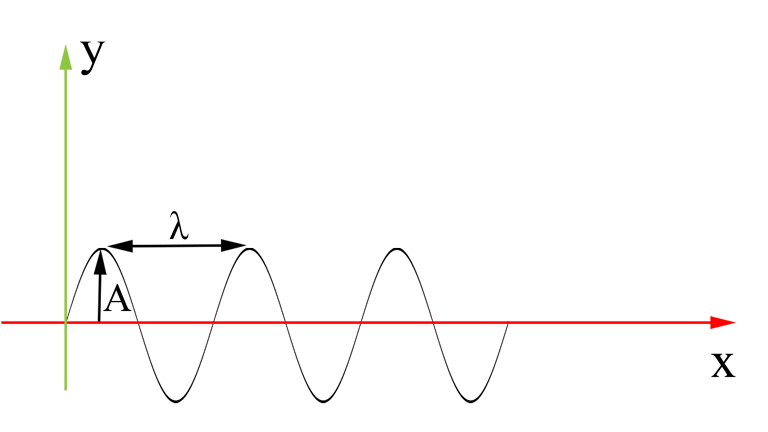

L'applicazione sviluppata come progetto di esame di geometria computazionale tenuto dal Prof. Alberto Alzati è composta da due scene:
Le curve di Bézier sono particolari curve parametriche ampiamente utilizzati in computer grafica per modellare curve morbide. Poiché la curva è completamente contenuto
nel guscio convesso dei suoi punti di controllo , i punti possono essere visualizzate graficamente ed usati per manipolare la curva intuitivamente.
Una curva di Bézier è una curva parametrica definita da n+1 punti (di controllo), e il poligono che si ottiente congiungendo i punti di controllo prende il nome di
poligono di controllo.
Una spline è una funzione composta da più curve polinomiali il cui scopo è dare continuità alla funzione fino ad un dato ordine di derivate in ogni punto dell'intervallo. Esistono 3 tipo di incollamenti C0,C1, C2. La prima garantisce che il punto Pn corrisponde con la fine di una curva e l'inizio della successiva, C1 oltre a garantire le condizioni di C0 garantisce che Pn-1, Pn e Pn+1 siano allineati questo permette di garantire che la derivata della prima curva in Pn coicinide con la derivata della seconda curva in Pn. C2 oltre a garantire C0 e C1 la derivata seconda delle due rette nel punto di contatto deve coincidere. All'interno del progetto si è scelto di usare un incollamento di tipo C1, i punti di controllo Pn-1, Pn e Pn+1 sono dunque allineati e hanno la stessa distanza, ovvero Pn-Pn-1 = Pn+1-Pn.
Quando un filo di lunghezza L viene teso, e si esercita una pressione nel centro, al rilascio inizia a vibrare generando un moto ondulatorio la cui velocità dipende dalla tensione e dalla massa per unità di lunghezza: $$v = \sqrt{T \over m/L}$$ All'interno del progetto per la simulazione del moto è stato scelto per semplificazione di usare una massa per unità di lunghezza pari a 0.3, che è tipicamente quella di una corda da chitarra. Quado vibra il filo ha una frequenza (detta frequenza fondamentale) che varia in base alla lunghezza della corda e alla velocità (quindi di conseguenza anche alla tensione della corda) dell'onda. $$f = {v \over 2L}$$ Nella simulazione del moto 2D è possibile impostare: tensione, lunghezza ed elasticità del filo. L'elasticità del filo indica quanto questo può essere tirato verso il basso. Se l'elasticità viene posta a 0 significa che il filo è rigido e di conseguenza non c'è moto. La tensione indica invece indica la forza esercitata dagli estremi nel tentatio di "allungare" il filo. I parametri impostabili hanno delle limitazioni dovute a problemi di natura computazionale. Nella simulazione del moto 3D sul piano si possono impostare frequenza e texture. Il piano presenta una texture neutra che può essere scambiata con una texture d'acqua (una modifica visiva semplice). La frequenza indica quante onde ci sono sul piano, rispetto al moto 2D è stato semplificato permettendo di impostare direttamente la frequenza, ma a livello fisico il moto è lo stesso e usando gli stessi parametri del moto 3D nella simulazione 2D si otterrebbe la stessa frequenza.
Un moto ondulatorio è descritto da un'equazione d'onda che è in funzione del tempo. I parametri dell'equazione sono: Ampiezza A (altezza dell'onda), lunghezza d'onda λ(la distanza tra una cresta
e l'altra) e il periodo T (tempo necessario per effetuare un ciclo di onda).

L'equazione è definita dalla formula:
$$y(x,t)=Acos({ 2\pi \over \lambda}-{2\pi \over T}t)$$
Nella scena 2D la spline inizialmente è composta da 7 punti (come se fosse composta da 2 curve, 4 punti che corrispondono alle tangenti e 3 che sono gli effettivi punti di controllo), i quali sono tutti allineati in modo da disegnare una curva. Ad ogni frame si
controlla se i punti di controllo sono cambiati o hanno cambiato la posizione per renderizzare nuovamente il filo. Dopo che viene esercitata una pressione e rilasciato viene calcolato
il nuovo numero di putni di controllo in base alla frequenza: con frequenza 1 si hanno 7 punti di controllo (2 curve), con frequenza 2 invece se ne hanno 13 (4 curve) e così via.
La distanza dei punti di controllo è calcoalta in base al numero di curve, quindi con una lunghezza di 10m con 2 curve la distanza tra i punti di controllo sarà 10/3=3,33. La distanza delle tangenti
invece è uniformemente distribuita tra i punti di controllo, ovvero, prendendo il caso precedente, se due punti di controllo hanno distanza 3,33 la distanza delle tangenti sarà 3,33/3=1,11.
Una volta calcolato il nuovo numero di punti di controllo bisogna far si che si muovano seguendo un moto odnulatorio. Avendo a disposizione i parametri Ampiezza (quanot il filo
è stato tirato verso il basso), Lunghezza d'onda e frequenza si calcolano per ogni putno di controllo il suo valore y tramite l'equazione dell'onda (tranne per il primo e l'ultimo punto che son fissi). Per le tangenti si è scelto
di impostare il valore di quella antecedente al punto di controllo calcolando anche'essa la sua posizione in base alla funzione d'onda, mentre la tangente successiva al punto di controllo
è calcolata in modo che intersechi la retta che passa per la tangente di sinsitra e il punto di controllo.
Durante il moto per ogni curva viene calcolato per ogni punto del filo il suo valore sulla spline.
La scena 3D è stata sviluppata partendo dal mdoello 2D, però invece di prendere l'intera spline viene presa solo metà in poi, posta al centro del piano e fatta ruote intorno all'asse z.
Più in dettaglio per ogni vertice della mesh del piano è stata calcolata la sua distanza dal centro del piano e usato il valore come valore x dell'intervallo della spline per ricavarne la z.
Quindi a differenza della scena con la corda solo l'ultimo punto di controllo è fisso, mentre tutti gli altir sono in movimento.
L'applicativo è molto semplice, la schermata si divide in tre bottoni, un menù a comparsa e la scena. I due bottoni a sinsitra permettono di passare dalla simulazione di moto ondulatorio con il filo (2D) e
quello con il piano (3D), di default è selezionato il primo, mentre il bottone a destra permette di mostrare i punti di controllo della spline, che sono composti da 2 colori, quelli blu che sono gli effettivi punti di controllo e quelli rosis che corrispondono alle tangenti.
Spostando il mouse a lato (sx) appare un menù a comparsa che permette di modificare i parametri della scena e testare diverse condizioni di simulazione.
Nella scena 2D
si può modificare la lunghezza del filo, la sua tensione e l'elasticità. La tensione determina quanto il filo è "tirato", maggiore è la tensione maggiore è la frequenza
(proporzionato però alla lunghezza del filo, a parità di tensione un filo più lungo ha una frequenza più bassa). L'elasticità indica invece quanto si può tirare il filo veros il basso
Nella scena 3D si può impostare la frequenza per avere un maggior numero di onde che muovno la superficie e cambiare la texture del piano.
Una volta impostati i parametri si può esercitare la pressione sul filo (o sul piano) usando il tasto destro del mouse e spostando il cursore verso il basso.